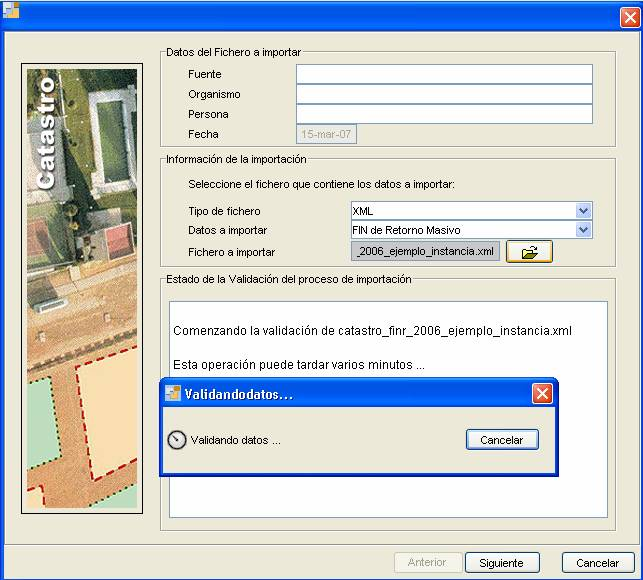
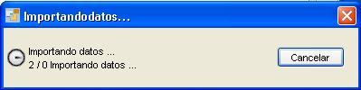
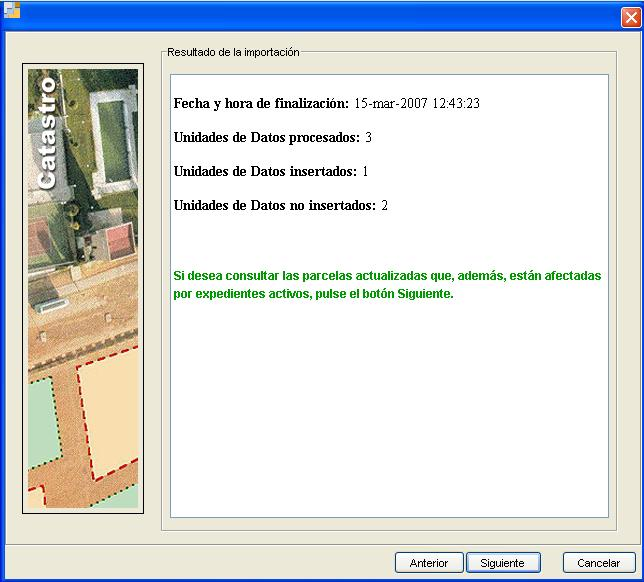

Figura 18. Selección en el menú
Esta opción permite a los usuarios importar en el sistema la información recogida en el fichero FIN DE RETORNO generado por la D. G. de Catastro. Este fichero FIN DE RETORNO deberá cumplir la estructura y esquema de la D.G. Catastro
(http://www.catastro.meh.es/esp/colaboradores1.asp#menu4)
Para ejecutar esta herramienta habrá que pulsar en la opción FIN de retorno masivo dentro de la opción del menú Importación de Ficheros (Figura 18). Una vez pulsada esta pestaña del menú aparecerá la ventana que nos permitirá realizar la importación del fichero FIN de Retorno Masivo (Figura 19).
Figura 18. Selección en el menú

Figura 19. Importador FIN de Retorno Masivo
En la parte de la ventana agrupada bajo en nombre de Información de la importación habrá que seleccionar el tipo de fichero a importar (únicamente podrá ser XML), los datos que se van a importar (FIN de Retorno Masivo) y se seleccionará el fichero con la información; todo esto se realiza a través de los campos Tipo de fichero, Datos a Importar y Fichero a Importar. Pulsando el botón de este último ( ) se abrirá un explorador de archivos que nos permitirá seleccionar el fichero concreto a importar.
) se abrirá un explorador de archivos que nos permitirá seleccionar el fichero concreto a importar.
Una vez seleccionado el fichero que se quiere importar dará comienzo la validación de la información contenida en el fichero para ver si se corresponde con la estructura empleada por la D.G.C. (Figura 20).

Figura 20. Proceso de Validación
El progreso de esta validación y su resultado final se mostrará en el campo Estado de la Validación del proceso de Importación, de manera que podremos conocer el resultado de esta.
Si la validación se ha realizado con éxito se habilitará el botón Siguiente de la ventana de importación, en caso contrario permanecerá deshabilitado y se indicará que el fichero no es correcto (Figuras 21 y 22).

Figura 22. Validación errónea
Una vez que se haya pulsado el botón Siguiente comenzará la importación de los datos, de manera que se almacenarán en la base de datos, indicando una vez haya finalizado el proceso los resultados de la importación. Durante el proceso de importación aparecerá en pantalla un reloj indicando el estado del proceso (Figuras 23 y 24).

Figura 23. Progreso inserción

Figura 24. Progreso inserción
Los resultados de la importación se mostrarán en una nueva ventana en el campo Resultado de la Importación, indicando las estadísticas de la importación realizada (Figura 25).

Figura 25. Resultado Inserción
Durante el proceso de la importación de los datos, puede que ocurran errores en la inserción o actualización de los datos contenidos en el fichero, estos errores se mostrarán en una ventana de error. Para ver el error que se ha producido con más detalle habrá que pulsar sobre el botón Mostrar Detalles de esta ventana de error (Figuras 26 y 27).

Figura 26. Error de inserción

Figura 27. Error inserción. Mostrar Detalles
Para dar por finalizada la importación de los datos hay que pulsar en el botón Finalizar de la herramienta.
Además se podrá cancelar en cualquier momento el proceso de importación pulsando sobre el botón Cancelar, de manera que se cerrará la ventana de importación del padrón catastral.
Por último podremos volver a la ventana anterior pulsando en el botón Anterior, permitiendo así repetir la tarea de importación de los datos de la misma manera que se ha indicado.